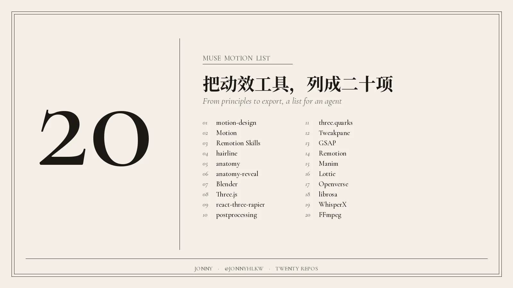

Jonny 在 11 月 26 日中午发了一份二十个 GitHub 仓库的清单。按照他的说法，把这些链接交给 Muse，就能从分镜、三维物理做到踩点配乐。清单里既有可以安装的智能体技能，也有 Blender、FFmpeg、Remotion 这类大型软件或框架。许可并不统一：多数仓库在 GitHub 上标为 MIT，但也有 GPL、LGPL、ISC、BSD，以及 GSAP 和 Remotion 各自的专门条款；其中 remotion-dev/skills 在仓库页上未见 LICENSE 文件。文中关于「全部在 Muse 验证可用」「复制链接就能装」的说法，均为原文自报。

这是什么
2026 年 11 月 26 日 12:00（新加坡时间，UTC+8），Jonny（@Jonnyhlkw）在 X 发了一篇中文长帖。帖子开头写：「这才是 Muse 的完全体！」随后列出二十个 GitHub 仓库，并说「海外大佬刚实测跑通 20 个开源神器，直接把 Muse 改造成好莱坞级动效工作室」。结尾又写：「20 个库全都在 Muse 验证可用，直接复制链接扔给 Muse 就能装。」以上均为原文自报。帖里没有点名这位「海外大佬」，本页也没有核对这些仓库是否都已在 Muse 中跑通。
Muse 在原文里是一个可以被投入 GitHub 链接、用来安装技能或调用工具的智能体。原帖没有写明它属于哪一家产品。本页沿用原文的叫法，不作进一步归属。
原帖附有一段约 42 秒的视频。本页没有转载这段视频，请到原文观看。
这份清单里有什么
二十个条目并不是同一类东西。前几项里，有给智能体用的技能包，例如 LottieFiles 的 motion-design-skill、Remotion 官方的 skills、hairline、anatomy 和 anatomy-reveal-skill。后面则更多是动画库、三维引擎、音频工具和导出程序，例如 Motion、Three.js、GSAP、Remotion、Blender 和 FFmpeg。原文把它们写成同一套「复制链接就能装」的流程，没有分开说明大型软件要如何安装。本页也没有在 Muse 里复现。
下面这张表里的仓库说明，尽量对应原帖的概括；许可一栏是 2026 年 11 月 27 日对照各仓库 GitHub 首页时的记录，不是许可证全文。
| # | 仓库 | 原帖概括 | 许可（收录当日） |
|---|---|---|---|
| 01 | LottieFiles/motion-design-skill | 迪士尼 12 项动画法则与缓动节奏 | MIT |
| 02 | motiondivision/motion | 弹簧物理动效与丝滑转场 | MIT |
| 03 | remotion-dev/skills | 官方视频生成技能库 | 仓库页未见 LICENSE |
| 04 | lucasmarkes/hairline | SVG 秒变交互式动态线条艺术 | MIT |
| 05 | wheresryan22/anatomy | 机械结构自动转 3D 剖面图 | MIT |
| 06 | annnguyentt/anatomy-reveal-skill | 产品 3D 爆炸拆解展示视频 | MIT |
| 07 | blender/blender | 3D 骨骼绑定与角色动画（原文写 Muse 开局自带） | 整体为 GPL-3.0；个别文件可能不同 |
| 08 | mrdoob/three.js | 3D 空间场景与电影运镜 | MIT |
| 09 | pmndrs/react-three-rapier | 3D 真实物理引擎 | MIT |
| 10 | pmndrs/react-postprocessing | 光晕、景深模糊等电影后期特效 | MIT |
| 11 | Alchemist0823/three.quarks | 粒子轨迹与视觉特效 | MIT |
| 12 | cocopon/tweakpane | 运行中实时拖拽调参面板 | MIT |
| 13 | greensock/GSAP | 行业标杆动画时间轴（原文写「现已彻底免费」） | GreenSock standard no-charge license；仓库页未见 SPDX |
| 14 | remotion-dev/remotion | 基于 React 的可编程视频引擎 | 特殊许可；部分情形需公司许可 |
| 15 | ManimCommunity/manim | 硬核科普、公式与几何动画神器 | MIT |
| 16 | airbnb/lottie-web | 轻量级矢量动画渲染 | MIT |
| 17 | WordPress/openverse | 免 API Key 直接搜免费音效和音乐（原文表述） | 软件仓库为 MIT；媒体条目各有自己的许可 |
| 18 | librosa/librosa | 自动抓取歌曲鼓点，让动画卡点起飞 | ISC |
| 19 | m-bain/whisperX | 全自动精准打轴字幕（原文写连日语都支持） | BSD-2-Clause |
| 20 | FFmpeg/FFmpeg | 全能格式转换与无损导出 | 主体为 LGPL；可选组件为 GPL |
第 01 项 motion-design-skill 讲的是给界面用的动效法则、时机和缓动，会提到迪士尼动画十二法则，但和 Dylan Tarre 的 Animation Principles 技能包不是同一套。第 05 项 anatomy 是 Ryan 的等轴测机器图技能，原帖写成「机械结构自动转 3D 剖面图」，是一种概括，细节以仓库说明为准。第 07 项里「Muse 开局自带」Blender，是原文的说法。第 17 项 Openverse 可以检索开放许可的音效和音乐，但每条媒体都有自己的许可和署名要求，并不因为软件仓库是 MIT 就自动免费可用。第 19 项「连日语都支持」是原文的说法。
许可
原帖把这二十个仓库统称为「开源神器」。对照各仓库的 GitHub 首页，情况并不整齐。
标为 MIT 的包括：motion-design-skill、Motion、hairline、anatomy、anatomy-reveal-skill、Three.js、react-three-rapier、react-postprocessing、three.quarks、Tweakpane、Manim、lottie-web，以及 Openverse 的软件仓库。librosa 为 ISC，WhisperX 为 BSD-2-Clause。Blender 的 README 写明软件整体采用 GNU GPL 第 3 版，个别文件可能使用与之相容的其他许可。FFmpeg 的 README 写明代码主体为 LGPL，可选组件为 GPL。
GSAP 的仓库页未见 SPDX 许可证文件。它的 README 写到，因 Webflow，全部工具（含原先仅对 Club 成员开放的插件）免费，并包括商业使用；许可一节指向 GreenSock 的 standard no-charge license。原帖写作「现已彻底免费」，应对照这份专门条款来理解，而不是把它看成 MIT 一类常见的开放许可。
Remotion 的 README 提醒读者：它有特殊许可，在部分情形下需要取得公司许可。官方技能仓库 remotion-dev/skills 在仓库页上未见 LICENSE 文件；技能列表里有一项 /remotion-license，用来查找 Remotion 的许可说明和购买入口。
本页只转载 Jonny 本人的帖文，不转载上述仓库的 README 或源码。使用其中任何一个项目前，请到对应仓库和许可页查看现行条款。
相关阅读
- 「动画十二法则」：把迪士尼的手艺写成 144 份技能
- Anatomy：把一个想法造成可交互的机器图
- Anatomy 社区画廊
- 17 个动效创作素材站
- 用 Openverse 给代码视频配开放许可音效
- Cloud Pass：用 Three.js 做成的无尽摩托骑行
原文
作者 Jonny（@Jonnyhlkw）· 2026-11-26 12:00（新加坡时间，UTC+8）· 原文已是中文，此处按段落整理，短链接已还原为 GitHub 地址。
🚨 这才是 Muse 的完全体！
海外大佬刚实测跑通 20 个开源神器，直接把 Muse 改造成好莱坞级动效工作室！！！
从分镜、3D 物理到踩点配乐一条龙全齐：
01 /motion-design-skill：迪士尼 12 项动画法则与缓动节奏
https://github.com/lottiefiles/motion-design-skill
02 Motion：弹簧物理动效与丝滑转场
https://github.com/motiondivision/motion
03 Remotion Skills：官方视频生成技能库
https://github.com/remotion-dev/skills
04 /hairline：SVG 秒变交互式动态线条艺术
https://github.com/lucasmarkes/hairline
05 /anatomy：机械结构自动转 3D 剖面图
https://github.com/wheresryan22/anatomy
06 /anatomy-reveal：产品 3D 爆炸拆解展示视频 😱
https://github.com/annnguyentt/anatomy-reveal-skill
07 Blender：3D 骨骼绑定与角色动画（Muse 开局自带）
https://github.com/blender/blender
08 Three.js：3D 空间场景与电影运镜
https://github.com/mrdoob/three.js
09 react-three-rapier：3D 真实物理引擎
https://github.com/pmndrs/react-three-rapier
10 react-postprocessing：光晕、景深模糊等电影后期特效
https://github.com/pmndrs/react-postprocessing
11 three.quarks：粒子轨迹与视觉特效
https://github.com/Alchemist0823/three.quarks
12 Tweakpane：运行中实时拖拽调参面板
https://github.com/cocopon/tweakpane
13 GSAP：行业标杆动画时间轴（现已彻底免费）
https://github.com/greensock/GSAP
14 Remotion：基于 React 的可编程视频引擎
https://github.com/remotion-dev/remotion
15 Manim：硬核科普、公式与几何动画神器
https://github.com/ManimCommunity/manim
16 Lottie：轻量级矢量动画渲染
https://github.com/airbnb/lottie-web
17 Openverse API：免 API Key 直接搜免费音效和音乐
https://github.com/WordPress/openverse
18 librosa：自动抓取歌曲鼓点，让动画卡点起飞
https://github.com/librosa/librosa
19 WhisperX：全自动精准打轴字幕（连日语都支持）
https://github.com/m-bain/whisperX
20 FFmpeg：全能格式转换与无损导出
https://github.com/FFmpeg/FFmpeg
所以，20 个库全都在 Muse 验证可用，直接复制链接扔给 Muse 就能装，赶紧收藏！